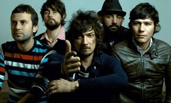
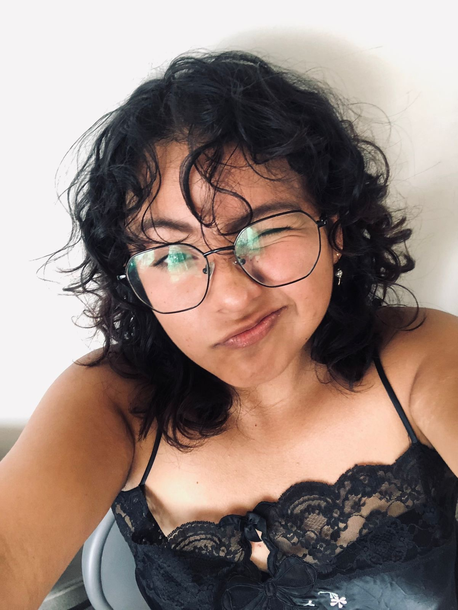

<!DOCTYPE html>
<html lang="es"></html>
<head>
<meta name="viewport" content="width=device-width, initial-scale=1.0">
<title>Actividad 3 </title>
<link rel="stylesheet" href="../ACT 3 /css/actividad 3.css">
<link href="https://cdn.jsdelivr.net/npm/bootstrap@5.3.3/dist/css/bootstrap.min.css" rel="stylesheet" integrity="sha384-QWTKZyjpPEjISv5WaRU9OFeRpok6YctnYmDr5pNlyT2bRjXh0JMhjY6hW+ALEwIH" crossorigin="anonymous">
<link rel="stylesheet" href="css/estilo.css">
</head>

<body>
    <header>
      <h1>Portafolio</h1>
      <nav class="navbar navbar-expand-lg bg-body-tertiary">
        <div class="container">
          <a class="navbar-brand" href="index.html">Home</a>
          <button class="navbar-toggler" type="button" data-bs-toggle="collapse" data-bs-target="#navbarNav" aria-controls="navbarNav" aria-expanded="false" aria-label="Toggle navigation">
            <span class="navbar-toggler-icon"></span>
          </button>
          <div class="collapse navbar-collapse" id="navbarNav">
            <ul class="navbar-nav">
              <li class="nav-item">
                <a class="nav-link" href="actividad1.html">Actividad 1</a>
              </li>
              <li class="nav-item">
                <a class="nav-link" href="actividad2a.html">Actividad 2 Fase A</a>
              </li>
              <li class="nav-item">
                <a class="nav-link" href="actividad2b.html">Actividad 2 Fase B</a>
              </li>
              <li class="nav-item dropdown">
                <a class="nav-link dropdown-toggle" href="#" role="button" data-bs-toggle="dropdown" aria-expanded="false">
                  Actividad 3
                </a>
                <ul class="dropdown-menu">
                  <li><a class="dropdown-item" href="actividad3.html">Mis Hobbies</a></li>
                  <li><a class="dropdown-item" href="hobbie3.html">La historia de la banda</a></li>
                  <li><a class="dropdown-item" href="hobbie2.html">Mi banda Favorita</a></li>
                </ul>
              </li>
              
              <li class="nav-item">
                <a class="nav-link" href="actividad5.html">Actividad 5  </a>
              </li>
              <li class="nav-item">
                <a class="nav-link" href="examen.html"> Examen</a>
              </li>
              <li class="nav-item">
                <a class="nav-link" href="actividad6.html">Actividad 6</a>
              </li>
            </ul>
          </div>
        </div>
      </nav>
  </header>


<main>
<link rel="stylesheet" href="css/actividad3.css">
<div class="header">
  <h1>Mi hobbie</h1>
</div>

<div class="row">
  <div class="col-3 col-s-3 menu">
    <nav>
    <ul>
      <li><a href="actividad3.html">Mi hobbie </a></li>
      <li><a href="hobbie3.html"> Historia de la banda </a></li>
      <li><a href="hobbie2.html">Mi banda favorita </a></li>
    </ul>
</nav>
  </div>

  <div class="col-6 col-s-9">
    <h1>Historia de la banda</h1>
    <h2> Años 90  </h2>
    <p>Durante la década de los 90 el concepto de Zoé aún era incierto, la banda tuvo un largo camino haciendo presentaciones informales. Llegaron a tener apariciones en Tv Azteca en su programa de música Coca-Cola Rock Líquido que estuvo al aire entre 1995 y 1996, donde dieron presentaciones con canciones inéditas como "Me Da Miedo Pensar" y "Alter Ego", también entrevistas. En dichas participaciones la banda estaba conformada por León Larregui (Voz), Sergio Acosta (Guitarra), Rodolfo Samperio (Bajo) y Beto Cabrera (Batería). Dicha alineación cambio cuando la banda se oficializó y Samperio con su separación de Zoé comenzó a formar parte de "Petróleo", en ese momento Ángel Mosqueda ocupó el lugar del Bajo y Jesús Báez se incorporó con los Teclados. 
      <a href="https://youtu.be/7h2ryr_uUEs">Video musical</a>
      
      <h2> Los años 2000</h2>
        <p>Según se dice, León Larregui asistió a un concierto con Sergio Acosta y al término del mismo, León le expresó: «Quiero crear una banda. ​ A falta de espacios para mostrar su música, Zoé se da a conocer en la escena underground a través de Internet y conciertos organizados por ellos mismos. Además, produjeron, por su propia cuenta, una demo titulada Demo Olmos, el cual contiene temas inéditos y las primeras maquetas que vendrían después en su primer álbum.​En los inicios de la banda para costearse equipos de música y grabación León tuvo que trabajar como modelo e incluso salió en videos musicales como Se Quiere, Se Mata de la cantante colombiana Shakira.</p>
        <h2>2011-2012: MTV Unplugged</h2>
        <p>En marzo de 2011 la banda lanza al mercado el álbum MTV Unplugged/Música de fondo, recopilación de sus más exitosos temas en acústico, donde cuenta con la colaboración de Adrián Dárgelos, Enrique Bunbury, Chetes y Denise Gutiérrez («Lo Blondo») del grupo Hello Seahorse!. Esta compilación obtuvo disco de platino por sus ventas. El primer sencillo fue «Soñé», y el 18 de febrero de 2011 se estrenó el vídeo de dicha canción en el canal de música MTV. La canción tuvo bastante éxito ya que se mantuvo en la radio nacional de México aproximadamente más de 6 semanas. El tema «Labios rotos» también se mantuvo entre los primeros lugares de la radio mexicana. </p>
        <p>El trabajo en este álbum les ha valido nominaciones para el Grammy Latino, la Lunas Del Auditorio e incluso una nominación para un premio especial en los MTV Europe Music Awards de 2011.</p>
 
    </div>

  <div class="col-3 col-s-12">
    <div class="aside">
      <div class="col align-self-start">
      <h2>¿Quién soy?</h2>
      
      <p>Mi nombre es Estefanía Hernández Narváez, estudiante de la carrera de Administración de Negocios Internacionales en el campus Xalapa de la Universidad Veracruzana.</p>
    </div>
  </div>
</div>

<footer>
  <div class="footer-content">
    <p>&copy; 2025 Estefanía Hernández Narváez. Actividad 3 .</p>
  </div>
</footer>
<script src="https://cdn.jsdelivr.net/npm/bootstrap@5.3.0-alpha1/dist/js/bootstrap.bundle.min.js"></script>
</main>
</body>
</html>

